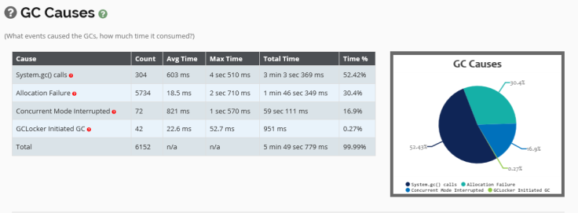

System.gc()是用Java，C＃和许多其他流行的高级编程语言提供的API。当它被调用时，它将尽最大努力从内存中清除垃圾（即未被引用的对象）。名词解释：GC，Garbage Collection，垃圾回收，下文会经常使用。
System.gc() 可以从应用程序堆栈的各个部分调用：
System.gc() 方法。System.gc() 也可以由您的第三方库，框架触发。System.gc() 。当 System.gc() 或 Runtime.getRuntime().gc()API被调用时，将触发完整的GC事件。在GC完成之前，整个JVM将冻结（即正在运行的所有服务将被暂停），通常完整的GC需要很长时间才能完成。因此在不合适的时间运行GC，将导致不良的用户体验，甚至是崩溃。
JVM具有复杂的算法，该算法始终在后台运行，进行所有计算以及有关何时触发GC的计算。当您显式调用System.gc()调用时，所有这些计算都将被抛掉。
GC操作应该由JVM自行控制，在绝大部分的场景都不建议程序员手动写代码显式进行System.gc()操作，但是也不排除其中个别例外：在我们开发多个微服务时，每个服务都有多个备份节点。在非业务高峰时段，我们可以从微服务-负载均衡的节点池中取出其中一个JVM实例。然后通过该JVM上的JMX显式触发System.gc()调用，一旦GC事件完成并且从内存中清除了垃圾，将该JVM放回到微服务-负载均衡的节点池中。
当然这个过程需要很好的微服务管理及服务发布机制配合，这样既能保证JVM垃圾内存的有效清理，又不影响业务的正常运行。
如第二小节所讲： System.gc() 可以从多个渠道进行的调用，而不仅仅是从您的应用程序源代码进行的调用。因此，搜索您的应用程序代码System.gc() 字符串，不足以知道 GC是否正在被调用。这就构成了一个挑战：如何检测应用程序是否正在进行垃圾回收？这就是GC日志派上用场的地方。
// java 8 启用GC日志：
// -XX:+PrintGCDetails -Xloggc:<gc-log-file-path> ,例如下面这行代码
-XX:+PrintGCDetails -Xloggc:/opt/tmp/myapp-gc.log
// java 9 启用GC日志：-Xlog:gc*:file=<gc-log-file-path> ,例如下面这行代码
-Xlog:gc*:file=/opt/tmp/myapp-gc.log建议始终在所有生产服务器中始终启用GC日志，因为它有助于您排除故障并优化应用程序性能。启用GC日志只会增加微不足道的开销。还可以将您的GC日志上传到垃圾收集日志分析器工具，例如GCeasy，HP JMeter等。这些工具将生成丰富的垃圾收集分析报告。

上图摘自GCeasy生成的报告。
如果我们就是想避免程序员显式调用GC，避免不成熟的程序员在不合适时间调用GC，避免人为造成的GC崩溃，该怎么办？可以通过如下方法：
在代码库中搜索 System.gc() 和Runtime.getRuntime().gc()。如果看到匹配项，则将其删除。但是这种方法无法避免第三方库、框架或通过外部源进行调用，那么参考第二种方法。
通过传递JVM参数 -XX:+DisableExplicitGC来强制禁止显式调用。这种方式强制、有效，应用程序内的任何GC显式代码调用System.gc() 都将被禁止生效。JVM自身的GC策略不受此参数影响，只禁止人为的触发GC。
如果您的应用程序正在使用RMI，则可以控制GC调用的频率 。启动应用程序时，可以使用以下JVM参数配置该频率：
-Dsun.rmi.dgc.server.gcInterval=n-Dsun.rmi.dgc.client.gcInterval=n这些属性的默认值在
如果您的应用主机内存资源非常富余，您可以将这些属性设置为很高的值，以便可以将GC带来的对应用程序的影响最小化。这也是应用程序性能优化的一种方式之一。